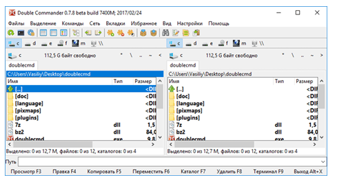
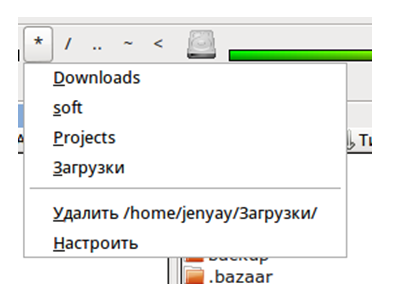
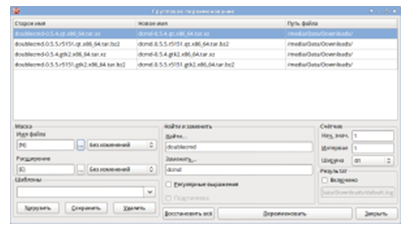
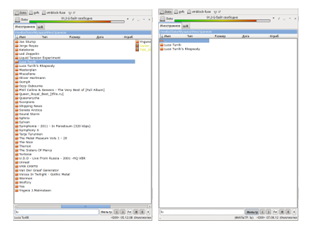

Урок 8. Файл и файловая система
Перечень рассматриваемых вопросов:
- Что такое файл, каталог.
- Виды файлов.
- Имена файлов.
- Каталоги, файловая структура.
- Графические изображения иерархической файловой структуры.
Тезаурус:
Файл – это поименованная область внешней памяти.
Операции над файлами:
- Копирование
- Перемещение
- Переименование
- Удаление
- Поиск
Маска представляет собой последовательность букв, цифр и прочих допустимых символов, среди которых также могут встречаться следующие символы:
? – означает ровно один произвольный символ
* – означает любую последовательность символов, в том числе, и пустую.
Каталог – это поименованная совокупность файлов и подкаталогов.
Файловая структура – это совокупность файлов на диске и взаимосвязей между ними.
Простые файловые структуры могут использоваться для дисков с небольшим (до нескольких десятков) количеством файлов.
Иерархические файловые структуры используются для хранения большого (сотни и тысячи) количества файлов.
Графическое изображение иерархической файловой структуры называется деревом.
Последовательно записанные: путь к файлу и имя файла, составляют полное имя файла.
Теоретический материал для самостоятельного изучения
Компьютер человеку даёт большие возможности: создавать, копировать, передавать, хранить информацию различного рода. Данные в компьютере могут быть разными, это и документы, и рисунки, и программы, и музыка и многое другое. Так вот, все данные и программы в компьютере хранятся в виде файлов. Сегодня на уроке мы и узнаем, что такое файл.
Вам уже известно, что все программы и данные хранятся во внешней памяти компьютера в виде файлов. Файл – это поименованная область внешней памяти.
Файл характеризуется набором параметров: именем, размером, датой создания, датой последней модификации и атрибутами, которые используются операционной системой для его обработки: является ли файл системным, скрытым или предназначен только для чтения. Размер файла выражается в байтах.
Файлы, которые содержат данные – графические, текстовые называются документами, а файлы, содержащие прикладные программы, – файлами-приложениями.
Причём, файлы-документы создаются и обрабатываются с помощью файлов-приложений.
Имя файла состоит из двух частей, разделённых точкой: собственно имени файла и расширения. Имя файлу даёт пользователь, делать это нужно осмысленно, отражая в имени содержание файла. Имя файла может содержать до 255 символов национальных алфавитов и пробелы. Но в имени файлов есть и запрещённые символы, например, знак вопроса, звёздочка. Расширение имени файла задаётся программой автоматически, оно содержит 3–4 символа, которые записываются после точки.
Над файлами можно выполнять следующие действия: копирование, перемещение, переименование, удаление, поиск.
Если имя файла указано неточно, то можно использовать маску имени файла. Маска представляет собой последовательность букв, цифр и прочих допустимых символов.
На каждом компьютерном носителе информации может храниться большое количество файлов. Для удобства поиска информации файлы объединяют в группы, называемые каталогами или папками. Каталогам, как и файлам, дают собственные имена. Каждый каталог может содержать множество файлов и вложенных каталогов, может входить в состав другого каталога, тем самым, образуя определённую структуру хранения файлов. Её называют файловой структурой. Файловая структура – это совокупность файлов на диске и взаимосвязей между ними.
Любой информационный носитель операционной системы Windowsимеет корневой каталог, который создаётся без участия человека. Корневые каталоги имеют специальное обозначение с указанием имени соответствующего устройства и знака «\» (обратный слэш).
Простые файловые структуры могут использоваться для дисков с небольшим количеством файлов. В этом случае оглавление диска представляет собой линейную последовательность имён файлов.
Иерархические файловые структуры используются для хранения большого количества файлов. Иерархия – это расположение частей целого в порядке от высшего к низшим. Корневой каталог содержит файлы и вложенные каталоги первого уровня.
Графическое изображение иерархической файловой структуры называется деревом, его можно изображать вертикально и горизонтально.
Чтобы обратиться к нужному файлу, который хранится, например, на жёстком диске, можно указать путь к файлу. То есть имена всех каталогов от корневого до того, в котором находится файл. Такую запись называют полным именем файла.
Разберём задачу:
Учитель работал в каталоге Д:\Уроки\7 класс \Практические работы. Затем перешёл в дереве каталогов на уровень выше, спустился в подкаталог Презентации и удалил из него файл Введение.ppt. Каково полное имя файла, который удалил учитель?
Решение:
Учитель работал с каталогом: Д:\Уроки\7 класс\Практические работы. Поднявшись на один уровень вверх, он оказался в каталоге Д:\Уроки\7 класс. После этого учитель спустился в каталог Презентации, путь к файлам которого имеет вид: D:\Уроки\7 класс \Презентации. В этом каталоге он удалил файл Введение.ppt, полное имя которого Д:\Уроки\7 класс \Презентации\ Введение.ppt.
Итак, сегодня мы узнали, что такое файл, какое имя он может иметь, какие операции можно выполнять над файлами. Также познакомились с понятиями каталог, файловая структура диска.
Материал для углубленного изучения темы.
Файловый менеджер Double Commander.
Double Commander‑ бесплатный файловый менеджер с двухоконным интерфейсом. Программа работает на разных операционных системах: Windows, Linux, MAC OS.
В программу встроены инструменты для группового переименования файлов и синхронизации, все операции выполняются в фоновом режиме, реализована поддержка вкладок, встроен просмотр файлов, эскизов, работа с архивами, расширенный поиск файлов, функция приостановки файловых операций, имеется поддержка некоторых плагинов для TotalCommander и т. д.

Внешний вид DoubleCommader является традиционным для программ подобного типа. Сверху расположены панели инструментов, список дисков, вкладки, собственно, список файлов, внизу находится командная строка и кнопки для тех, кто еще не запомнил наиболее часто используемые файловые операции, но можно скрыть эту панель,
DoubleCommander имеет огромное количество настроек. Настроить можно практически каждый элемент окна, главное найти нужные галочки или поля ввода.
Работа с избранными папками осуществляется с помощью меню, выпадающего при нажатии на кнопку «*». Выглядит оно следующим образом:

Сверху перечислены папки, добавленные в избранные, а снизу два пункта меню для добавления/удаления папки из выбранной панели в список.
Что касается группового переименования, то интерфейс для него выглядит следующим образом:

При переименовании можно использовать регулярные выражения и различные поля вроде счетчика (чтобы добавлять к каждому последующему файлу свой номер), даты, времени создания файла.
В DoubleCommander есть возможность с помощью горячих клавиш (или пункта меню) копировать в буфер обмена имя файла или полный путь до него, Правда, это решается двумя горячими клавишами: сначала переходим к «редактированию пути» в заголовке панели, затем выделенный путь можно скопировать с помощью стандартной комбинации Ctrl+C. Панель быстрого фильтра, позволяет искать файлы/папки в текущей папке, а при необходимости скрыть все файлы и папки, не удовлетворяющие критерию поиска.

Для поиска файлов в DoubleCommander довольно удобный интерфейс. Есть возможность вынесения результатов поиска на панель.
Программа DoubleCommander создана коллективом разработчиков из России, которые стремятся создать файловый менеджер, аналогичный по функциональности TotalCommander. Программа активно развивается.